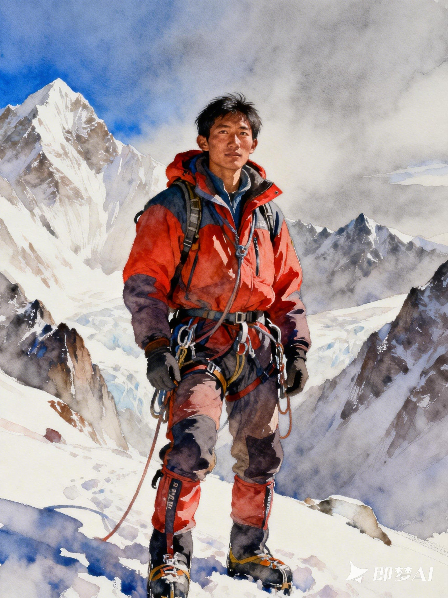

01
可靠的参考素材
Reliable Reference
锁定角色形象Lock down the character identity
AI 图像生产体系 AI Image Production System
From Reference
to a Consistent IP System
通过参考素材锚定角色身份，使用统一的视觉标准控制风格，再通过精准提示词与多轮迭代，建立一套可复用、可扩展、可持续生成的 AI 图像制作流程。 Anchor the character identity with reference material, control style with one unified visual standard, then use precise prompts and repeated iteration to build a reusable, extensible and sustainable AI image pipeline.

交互式流程 Interactive Pipeline
核心原理 Core Workflow Principle
Core Workflow Principle
锁定角色形象Lock down the character identity
把控画面质量Control the image quality
实现视觉风格统一Reach one unified visual style
角色一致性不是一次生成得到的结果，而是通过可靠的参考素材、明确的视觉标准、精准的提示词和持续的反馈迭代共同建立的。 Character consistency is not what a single generation produces. It is built together from reliable reference material, an explicit visual standard, precise prompts and continuous feedback-driven iteration.
迭代优化 Iterative Optimization
Before & After Optimization
初稿不是终点。通过多轮反馈逐项修正问题，把一张「方向正确」的初稿，逐步优化为「可交付」的成片。 The draft is not the finish line. Fix the issues one by one across several feedback rounds to turn a directionally correct draft into a deliverable final image.
拖拽中缝对比优化前后。左边是初次生成稿，右边是经过提示词修正、局部调整与风格校准后的结果。 Drag the divider to compare. The left side is the first-pass draft; the right side is the result after prompt fixes, local adjustments and style calibration.
系列输出 Series Output
One Character. Many Visual States.
系列化输出并不是简单复制同一张图，而是在保持角色身份、风格、材质和场景氛围统一的基础上，扩展不同的角度、动作和叙事状态。 Series output is not copying one image. It expands different angles, actions and narrative states while keeping character identity, style, material and scene mood unified.